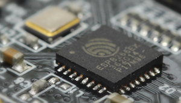
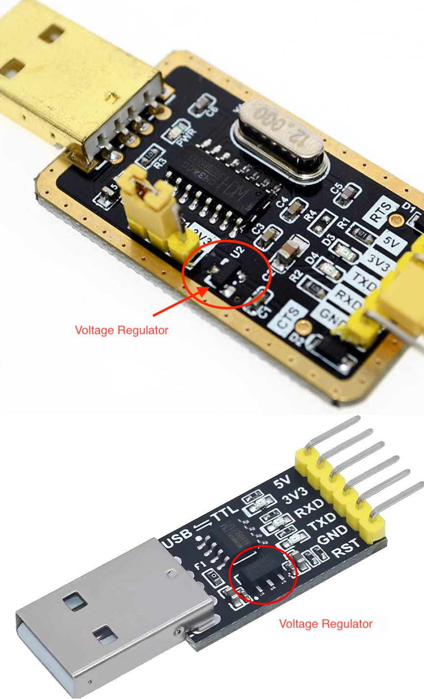
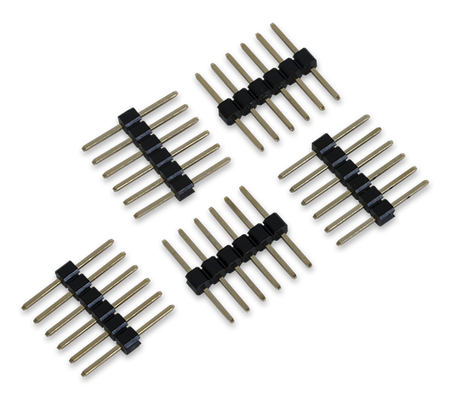
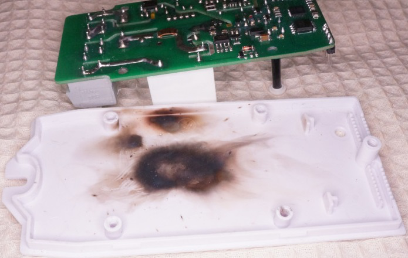
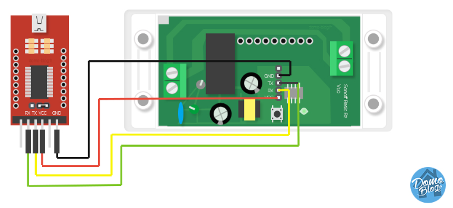
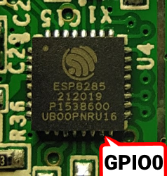
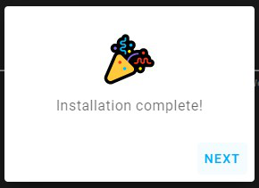
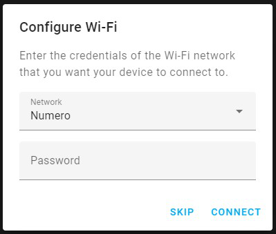
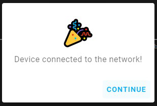
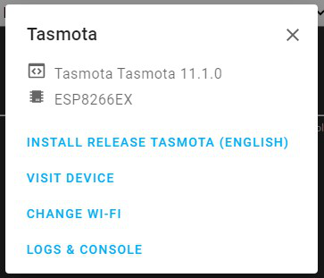

Тасмота
Начиная
Тасмота
Необходимое программное обеспечение
Драйверы Universal Display и Universal Touch (uDisplay/uTouch)
Калибровка мониторинга мощности
Мост последовательного порта к TCP
Интерфейс интеллектуального счетчика
Универсальная файловая система
Bluetooth с низким энергопотреблением
Интеграция с умным домомИнтеграция с умным домом
Поддерживаемые устройстваПоддерживаемые устройства
Настроить неизвестное устройство
Предпосылки~
Необходимое оборудование~

Устройство ESP~
Каждое устройство на базе чипсета Espressif ESP8266, ESP8285, ESP32, ESP32-S или ESP32-C3 может быть прошито с помощью Tasmota. Термин ESP относится к любому из них.
Последовательный программатор~
Питание , подаваемое на устройство, является одним из важнейших элементов как для прошивки устройства, так и для его стабильной работы. Вы должны убедиться, что устройство получает достаточное питание (ток И соответствующий уровень напряжения) для правильной прошивки на устройстве.
Не забудьте установить драйверы для вашего последовательного программатора.
Опасность
Некоторые адаптеры можно переключать между 3,3 В и 5 В для контактов данных, но они все равно будут обеспечивать 5 В на контакте питания, что безвозвратно уничтожит ваше устройство. Вы ДОЛЖНЫ убедиться, что контакты данных (RX и TX) и VCC установлены на 3,3 В.
Многие последовательные программаторы не имеют регулятора напряжения на плате, как на изображении. ESP требует не менее 150 мА, многие последовательные программаторы 3,3 В не могут обеспечить такой большой ток, поскольку многие задачи последовательного программирования не требуют большого количества энергии.
При использовании внешнего источника питания 3,3 В убедитесь, что заземление (GND) обоих подключено вместе, это обеспечивает общее заземление. Источником питания ПК может быть источник питания постоянного тока 3,3 В.
Устройства с портом загрузки USB обычно имеют встроенный последовательный программатор, например, продукты NodeMCU , D1 mini или M5Stack .
Инструменты для пайки~
Для пайки вам, конечно, понадобится паяльник, олово и немного флюса. Если вы новичок в пайке, посмотрите несколько обучающих видео по пайке, пока вы этим занимаетесь.
Если вас пугает пайка, то для различных модулей и устройств доступны 3D-печатные приспособления. В худшем случае вы можете обойтись, крепко удерживая заголовки с помощью перемычек в отверстиях для штырьков во время прошивки, но это не надежный процесс, и прошивка может не получиться.
Провода-перемычки~
Вы можете использовать любой вид провода, но перемычки (также называемые проводами DuPont) более практичны, чем пайка и распайка.
Заголовки контактов~

Штыревые разъемы бывают в исполнении «папа» или «мама». Выбирайте в соответствии с разъемами для перемычек.
Компьютер с Linux, Windows или MacOS~
Для загрузки прошивки на устройство и его настройки вам понадобится компьютер с USB-портом.
Смартфон~
Tasmota, установленная из предварительно скомпилированного двоичного файла, должна быть настроена для работы с вашей сетью Wi-Fi, прежде чем вы сможете получить доступ к веб-интерфейсу Tasmota. Обычно это делается путем подключения к точке доступа Wi-Fi Tasmota с помощью смартфона (или планшета, или компьютера с Wi-Fi).
Необходимое программное обеспечение~
Двоичный файл прошивки Tasmota~
Загрузите двоичный файл прошивки Tasmota (.bin). Если вы не уверены, какой двоичный файл вам подходит, просто начните с него tasmota.binили обратитесь к таблице сборок , чтобы узнать, какие функции вам нужны.
Официальные релизные двоичные файлы можно загрузить с сервера прошивок .
Последние двоичные файлы ветки разработки доступны только с нашего сервера OTA . Последний объединенный код разработки компилируется ежечасно.
Инструмент для прошивки~
Инструменты компиляции (необязательно)
Знание MQTT~
Tasmota разработана для управления и связи через MQTT . Чтобы использовать его потенциал в полной мере, вам нужен брокер MQTT .
Прочитайте нашу статью о MQTT, чтобы узнать, почему он так важен в Tasmota.
Подготовка оборудования~
Нам нужно подключиться к последовательному интерфейсу программирования чипа ESP. Это делается путем подключения контактов TX и RX нашего последовательно-USB-преобразователя к контактам RX и TX ESP и подачи питания на чип с помощью контактов 3,3 В и GND.
В большинстве случаев эти штырьки доступны на печатной плате в виде отверстий для штырьков или контактных площадок, но штырьковые заголовки или перемычки необходимо припаять или применить иным образом. В некоторых случаях вам придется припаять провода непосредственно к штырькам чипа, что требует некоторого опыта и хорошего паяльного оборудования.
НЕ ПОДКЛЮЧАЙТЕ УСТРОЙСТВА К СЕТИ ПЕРЕМЕННОГО ТОКА, ПОКА КРЫШКА ОТКРЫТА И ПЕЧАТНАЯ ПЛАТА ОТКРЫТА!!!

НИКОГДА НЕ ПЫТАЙТЕСЬ ПРОШИВАТЬ, КОГДА ВАШЕ УСТРОЙСТВО ПОДКЛЮЧЕНО К СЕТИ!!!
ВАС МОЖЕТ ПОРАЖАТЬ ТОКОМ, ЕСЛИ ВЫ НЕ ЗНАЕТЕ, ЧТО ДЕЛАЕТЕ!
Если вы не будете осторожны, ваше здоровье будет в опасности. Замыкание вашего последовательного интерфейса с сетевым переменным током сожжет ваше устройство и последовательный адаптер, а также повредит или уничтожит ваш компьютер. Важно всегда отключать все сетевые кабели питания от устройства при подключении через последовательный порт или даже при открытии корпуса устройства.
Последовательное соединение~
Каждое устройство имеет свои контакты с разной маркировкой. Если маркировка не видна на печатной плате, обратитесь к руководству по перепрошивке устройств или найдите в Интернете правильное расположение контактов. Инструкции и ограничения для конкретных устройств задокументированы в репозитории поддерживаемых устройств Tasmota . Распиновки для часто используемых модулей Wi-Fi можно найти здесь
Определив контакты на вашем устройстве, подключите провода в соответствии с таблицей:
|
Последовательный адаптер |
устройство ESP |
|
3V3 |
3V3 или VCC |
|
Техас |
РХ |
|
РХ |
Техас |
|
Земля |
Земля |
Обратите внимание, что TX от вашего адаптера идет на RX на устройстве ESP, а RX от адаптера идет на TX на устройстве! 
Режим программирования~

ESP необходимо перевести в режим программирования или флэш-режим перед загрузкой прошивки. Это делается путем подключения контакта GPIO0 к GND во время загрузки чипа.
На многих устройствах установленная кнопка управления подключена к GPIO0 и GND, что упрощает вход в режим программирования. На других вам нужно будет соединить контакты на печатной плате или непосредственно на чипе с помощью перемычки. Расположение GPIO0 для популярных модулей можно найти в разделе Распиновка !
Инструкции по конкретным устройствам задокументированы в репозитории поддерживаемых устройств Tasmota .
Чтобы перевести ESP в режим программирования:
Тест режима программирования esptool.py
Если все прошло хорошо, вы находитесь в режиме программирования и готовы продолжить прошивку . Если процесс прошивки не может начаться, отсоедините устройство и повторите шаги.
Распространенные ошибки~
Мигающий~
Если вы выполнили подготовку оборудования , ваше устройство должно находиться в режиме программирования и быть готовым к установке двоичного файла прошивки Tasmota.
Возможно, вам захочется сделать резервную копию прошивки производителя устройства на тот случай, если Tasmota вам не понравится (это один шанс из миллиона).
Веб-установщикТасмотайзер! esptool.py ОТА-конвертация
Запускайте Tasmota прямо из вашего веб-браузера.
1. Подключите устройство ESP к компьютеру с помощью USB-адаптера или адаптера Serial-USB.
2. Выберите вариант прошивки, подходящий для вашего устройства.
3. Нажмите «ПОДКЛЮЧИТЬ» и выберите правильный порт или обратитесь к справке, если устройство не найдено.
СОЕДИНЯТЬ
Начальная конфигурация~
Использование веб-установщика TasmotaИспользование веб-интерфейсаИспользование последовательного терминала
После успешной установки нажмите ДАЛЕЕ . Установщик выполнит сканирование сетей Wi-Fi и выберет самую мощную. Используйте раскрывающийся список для выбора сетей.
Введите пароль Wi-Fi.
Дождитесь завершения настройки и нажмите «ПРОДОЛЖИТЬ»
. Далее нажмите «ПЕРЕЙТИ НА УСТРОЙСТВО», чтобы войти в веб-интерфейс для дальнейшей настройки.
После настройки~
Ваше устройство под управлением Tasmota теперь готово к управлению .
Ознакомьтесь со всеми функциями Tasmota и способами его интеграции с другими платформами.
Предупреждение
Если в вашей электросети наблюдаются перепады напряжения, лучше всего немедленно отключить функцию восстановления после цикла включения и выключения питания с помощью команды SetOption65 1, иначе на вашем устройстве могут остаться настройки прошивки по умолчанию.